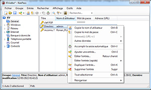

Introduction

KeePass : © 2003-2023 Dominik Reichl. Le programme est un logiciel Open Source certifié OSI, c'est-à-dire au code source ouvert. Certifié OSI est un gage de qualité de l'Open Source Initiative (entreprise au code source ouvert). Pour plus d'informations, consultez la page Licence.
Introduction

Aujourd'hui, vous avez besoin de mémoriser beaucoup de mots de passe. Vous avez besoin d'un mot de passe pour de nombreux sites, votre compte de messagerie électronique, votre serveur Web, l'ouverture d'une session Windows, le compte FTP de votre site, les connexions (ouvertures de session) réseau, etc. La liste est sans fin. Vous devez également utiliser un mot de passe différent pour chaque compte. Parce que si vous utilisez le même mot de passe partout et que quelqu'un l'obtienne, alors là vous auriez un problème : le voleur aurait accès à tous vos comptes.
KeePass est un gestionnaire de mots de passe libre/gratuit, au code source disponible (au code ouvert), qui vous aide à gérer vos mots de passe d'une façon sécurisée.
Vous pouvez stocker tous vos mots de passe dans une seule base de données, qui est verrouillée par une clé principale. Donc, vous avez simplement à vous souvenir que d'une clé principale pour déverrouiller toute la base de données. Les fichiers de bases de données sont chiffrés en utilisant les algorithmes de chiffrement les meilleurs et les plus sécurisés actuellement connus (AES256, ChaCha20 et Twofish).
La base de données se compose d'un seul fichier, elle peut donc être transférée facilement d'un ordinateur à un autre. Les données peuvent également être importées/exportées depuis/vers différents autres formats (importées depuis plus de 40 formats différents d'autres gestionnaires de mots de passe, importateur de CSV générique, etc.). Bien sûr, l'impression des entrées est également prise en charge.
KeePass prend en charge des groupes, qui vous permettent de convenablement organiser vos entrées. Pour localiser rapidement des entrées spécifiques, il y a des fonctions de recherche.
Il y a plusieurs méthodes pour transférer les données des entrées (comme les noms d'utilisateurs et les mots de passe) de KeePass vers d'autres applications (presse-papiers, glisser-déposer, etc.). La puissante fonction de saisie automatique peut simuler des pressions de touches.
KeePass possède un générateur de mots de passe aléatoires forts (vous pouvez définir les caractères autorisés, la longueur, les règles de génération, etc.).
Le logiciel fonctionne sur une architecture de greffon (plug-in). Des greffons peuvent ajouter des fonctionnalités dans de nombreux domaines (intégration, transfert, sauvegarde, fonctionnalité réseau, et même encore davantage de formats d'importation/exportation, et bien plus encore).
Comme KeePass est au code ouvert, vous pouvez consulter entièrement son code source et vérifier que les fonctions de sécurité sont correctement implémentées.
Cette documentation s'applique à KeePass 2.x.